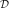
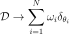
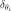
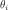

MeasureFactory¶
-
class
otrobopt.MeasureFactory(*args)¶ Discretize a measure function.
It consists in replacing the distribution

of the measure by a discrete approximation.
Where

is the Dirac measure at
.- Parameters
- experiment
openturns.WeightedExperiment Parameters design of experiment
- experiment
Examples
First define a measure:
>>> import openturns as ot >>> import otrobopt >>> thetaDist = ot.Normal(2.0, 0.1) >>> f_base = ot.SymbolicFunction(['x', 'theta'], ['x*theta']) >>> f = ot.ParametricFunction(f_base, [1], [1.0]) >>> measure = otrobopt.MeanMeasure(f, thetaDist)
Then discretize it:
>>> N = 10 >>> experiment = ot.LHSExperiment(N) >>> factory = otrobopt.MeasureFactory(experiment) >>> discretizedMeasure = factory.build(measure)
Discretize several measures at once:
>>> coll = [otrobopt.MeanMeasure(f, thetaDist), ... otrobopt.VarianceMeasure(f, thetaDist)] >>> discretizedMeasures = factory.buildCollection(coll)
Methods
build(measure)Discretize a measure.
buildCollection(collection)Discretize several measures.
Accessor to the object’s name.
getId()Accessor to the object’s id.
getName()Accessor to the object’s name.
Accessor to the object’s shadowed id.
Accessor to the object’s visibility state.
hasName()Test if the object is named.
Test if the object has a distinguishable name.
setName(name)Accessor to the object’s name.
setShadowedId(id)Accessor to the object’s shadowed id.
setVisibility(visible)Accessor to the object’s visibility state.
-
__init__(*args)¶ Initialize self. See help(type(self)) for accurate signature.
-
build(measure)¶ Discretize a measure.
- Parameters
- measure
MeasureEvaluation Measure
- measure
- Returns
- measure
MeasureEvaluation Discretized measure
- measure
-
buildCollection(collection)¶ Discretize several measures.
- Parameters
- collectionsequence of
MeasureEvaluation The measures to discretize.
- collectionsequence of
- Returns
- measuressequence of
MeasureEvaluation Discretized measures
- measuressequence of
-
getClassName()¶ Accessor to the object’s name.
- Returns
- class_namestr
The object class name (object.__class__.__name__).
-
getId()¶ Accessor to the object’s id.
- Returns
- idint
Internal unique identifier.
-
getName()¶ Accessor to the object’s name.
- Returns
- namestr
The name of the object.
-
getShadowedId()¶ Accessor to the object’s shadowed id.
- Returns
- idint
Internal unique identifier.
-
getVisibility()¶ Accessor to the object’s visibility state.
- Returns
- visiblebool
Visibility flag.
-
hasName()¶ Test if the object is named.
- Returns
- hasNamebool
True if the name is not empty.
-
hasVisibleName()¶ Test if the object has a distinguishable name.
- Returns
- hasVisibleNamebool
True if the name is not empty and not the default one.
-
setName(name)¶ Accessor to the object’s name.
- Parameters
- namestr
The name of the object.
-
setShadowedId(id)¶ Accessor to the object’s shadowed id.
- Parameters
- idint
Internal unique identifier.
-
setVisibility(visible)¶ Accessor to the object’s visibility state.
- Parameters
- visiblebool
Visibility flag.